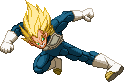
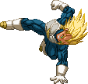

Surprise Flash
Very sneaky move! Whilst dashing forward, inputting SP makes Vegeta instantly teleport back a fair distance. Nice to bait the enemy into attacking you. However it won't work if the enemy is firing Ki Blasts because you'll end up right back in their path.

Uppercut
Main tool for launching enemies into the air. However, SSJ Vegeta's works a bit differently.
It doesn't launch the enemy up quite as high and he doesn't need to land and then persuit to perform a follow-up attack
because he remains beside them on the same height. A standard air combo chain won't work but some other cool things are possible.


Raccoon Elbow
Overhead Attack. Vegeta gains a tiny boost of upwards movement when you perform it. It knocks the opponent down hard.


Reverse Breaker Kick
Cross-up attack.



Breaker Kick
A spinning hop kick, which can chain off a standing Strong Punch. It gains more distance as you perform it while dashing forward.
By holding the Strong Kick button down, you can delay the actual kick. If you hold it for the entire duration of the hop Vegeta does, it won't even come out at all.

Sliding Kick
A simple sliding kick that trips the enemy on impact.

Saiyan Step
Based on the famous Wave Dash from Tekken fame. The Saiyan Step makes Vegeta invulnerable to projectiles for a bit during it.
It also makes way for a variety of moves out of it. There are two new moves and four 'Enhanced' versions of some of his other moves.
These cost no additional gauge to use. These Enhanced versions will be described in the respective move sections.
-f+P = Enhanced Super Dash.
-QCF+2P = Enhanced EX Super Dash.
-f+K = Enhanced Straight Shooter.
-b+P = Royal God Fist.
-QCB+2P = Enhanced EX Royal Rekka starter.
-b+K = Savage Grounder.
-f+P = Enhanced Super Dash.
-QCF+2P = Enhanced EX Super Dash.
-f+K = Enhanced Straight Shooter.
-b+P = Royal God Fist.
-QCB+2P = Enhanced EX Royal Rekka starter.
-b+K = Savage Grounder.


Super Dash
Based on his dashing autocombo attacks by the same name from the old Butoden games. Our version is a bit faster. The Enhanced version of this adds one more attack and carries both Vegeta and the enemy higher into the air.
The EX version is based off the version that's featured in the Final Bout game. The Enhanced EX version causes the enemy to wall splat after the last attack connects.


Royal Rekka
The Royal Rekka is a multi-part move not unlike Base Goku's old Dragon Fist.
It has a starter attack (a gut punch, as well as a multi-punch EX version) and from that, various paths you can take. Let's break it down:
STARTERS
LP has the fastest start-up but the weakest hitstun on impact. Just enough hitstun to link into the MP Path, not the LP or SP ones.
MP has a medium start-up and a decent hitstun on impact, allowing you to link into a Light attack.
SP has the slowest start-up but the longest hitstun on impact, allowing you to link into a Light or Medium attack.
The Starter attack's range is the same for all versions. For all versions you can go into a Path both on impact, on block and on whiff.
The EX version has the start-up time and hitstun of the MP version and gains quite some range, traveling forward at least 2/5 of the screen. It also does more damage by automatically following into a couple more punches. You can cancel out of the final punch into a Path quicker than any of the Normal versions, almost immediately upon impact. However you cannot go into a Path if the move whiffs. When it's blocked, Vegeta will keep throwing out the additional punches. The hitstun is inbetween that of the LP and MP versions.
The Enhanced EX Starter does more damage through more punches upon connecting. Otherwise it's identical to the regular EX version besides for the little known fact that it restands the opponent!
PATHS. The stronger the Starter leading up to it, the stronger the Path.
LP hits low. Due to its medium-long start-up speed it does NOT combo off of the LP Starter. Doing it out of MP Starter does enough hitstun for you to follow with a Light Attack. Out of a SP Starter, Mediums will also connect.
MP hits mid. Doing it out of MP Starter does enough hitstun for you to follow with a Light Attack. Out of a SP Starter which does even more hitstun, Mediums will also connect.
SP hits high. Due to its long start-up speed it does NOT combo off of the LP Starter. It also has the longest recovery time. Doing it out of SP Starter causes enough hitstun for you to follow with a Light Attack. Not Mediums.
EX creates a small multi-hitting Atomic Bomb, enabling Vegeta to retreat while leaving behind a present for the opponent.
ENDERS. As with the Path, the stronger the Starter leading up to it is, the stronger the Ender will be.
LP hits low and pop-trips the enemy (similar to N/M Vegeta's Dashing Slide Kick). Out of a Strong Starter, it will flip KO the opponent up for even better juggling options.
MP hits mid and knocks the enemy away. Acting as a combo ender. However in the corner, you can catch p2 with a st/LK/cr.LK. Doing it out of an LP Path does a simple knock-away, while out of a MP Path results in a Twist KO. Out of SP Path it also does a Twist KO but makes p2 fly up and away higher and when done close to the wall, p2 will wallsplat against it, allowing for new follow-up options.
SP hits high and launches p2, enabling you to go Persuit and aircombos. Out of a LP Starter it does quite a small launch but it still allows for a persuit into aircombo. Out of a MP Starter it does the common launcher, and out of an SP Starter it will Flip KO the opponent high into the air.
EX Ender is the same Atomic Bomb as the EX Path.
STARTERS
LP has the fastest start-up but the weakest hitstun on impact. Just enough hitstun to link into the MP Path, not the LP or SP ones.
MP has a medium start-up and a decent hitstun on impact, allowing you to link into a Light attack.
SP has the slowest start-up but the longest hitstun on impact, allowing you to link into a Light or Medium attack.
The Starter attack's range is the same for all versions. For all versions you can go into a Path both on impact, on block and on whiff.
The EX version has the start-up time and hitstun of the MP version and gains quite some range, traveling forward at least 2/5 of the screen. It also does more damage by automatically following into a couple more punches. You can cancel out of the final punch into a Path quicker than any of the Normal versions, almost immediately upon impact. However you cannot go into a Path if the move whiffs. When it's blocked, Vegeta will keep throwing out the additional punches. The hitstun is inbetween that of the LP and MP versions.
The Enhanced EX Starter does more damage through more punches upon connecting. Otherwise it's identical to the regular EX version besides for the little known fact that it restands the opponent!
PATHS. The stronger the Starter leading up to it, the stronger the Path.
LP hits low. Due to its medium-long start-up speed it does NOT combo off of the LP Starter. Doing it out of MP Starter does enough hitstun for you to follow with a Light Attack. Out of a SP Starter, Mediums will also connect.
MP hits mid. Doing it out of MP Starter does enough hitstun for you to follow with a Light Attack. Out of a SP Starter which does even more hitstun, Mediums will also connect.
SP hits high. Due to its long start-up speed it does NOT combo off of the LP Starter. It also has the longest recovery time. Doing it out of SP Starter causes enough hitstun for you to follow with a Light Attack. Not Mediums.
EX creates a small multi-hitting Atomic Bomb, enabling Vegeta to retreat while leaving behind a present for the opponent.
ENDERS. As with the Path, the stronger the Starter leading up to it is, the stronger the Ender will be.
LP hits low and pop-trips the enemy (similar to N/M Vegeta's Dashing Slide Kick). Out of a Strong Starter, it will flip KO the opponent up for even better juggling options.
MP hits mid and knocks the enemy away. Acting as a combo ender. However in the corner, you can catch p2 with a st/LK/cr.LK. Doing it out of an LP Path does a simple knock-away, while out of a MP Path results in a Twist KO. Out of SP Path it also does a Twist KO but makes p2 fly up and away higher and when done close to the wall, p2 will wallsplat against it, allowing for new follow-up options.
SP hits high and launches p2, enabling you to go Persuit and aircombos. Out of a LP Starter it does quite a small launch but it still allows for a persuit into aircombo. Out of a MP Starter it does the common launcher, and out of an SP Starter it will Flip KO the opponent high into the air.
EX Ender is the same Atomic Bomb as the EX Path.

Grounder
A quite violent air-to-ground grab and throw attack. A whiffed version of this acts as a very neat airplay tool. The Enhanced version that comes out of his Saiyan Step (f,d,df, b+K) comes from the ground and can grab both standing and aerial opponents.


Straight Shooter
A forward-flying kick, which causes the enemy to twist in place for a short while upon impact, as well as making Vegeta switch sides with them.
The Enhanced version (f,d,df, f+K) ends with Vegeta turning around and kicking the opponent away into a wall splat.